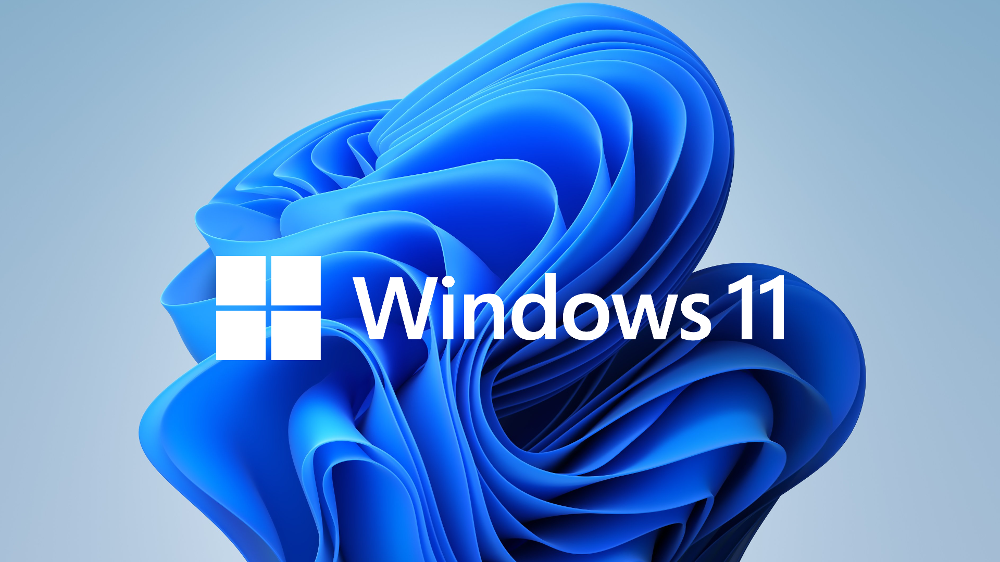
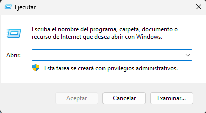
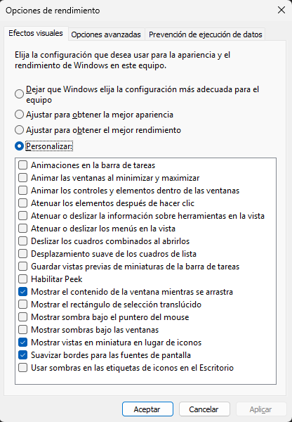
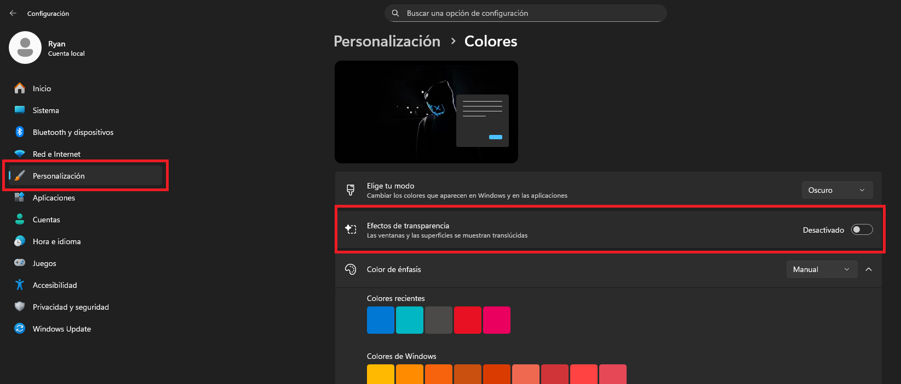
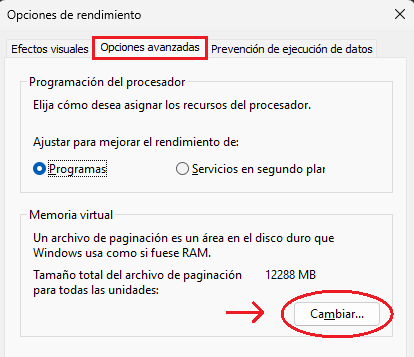
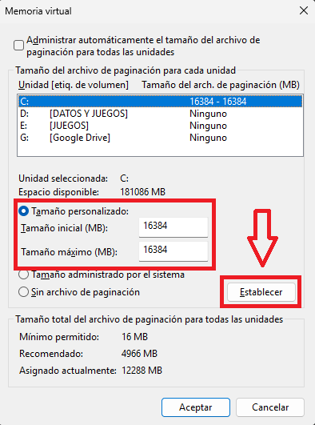
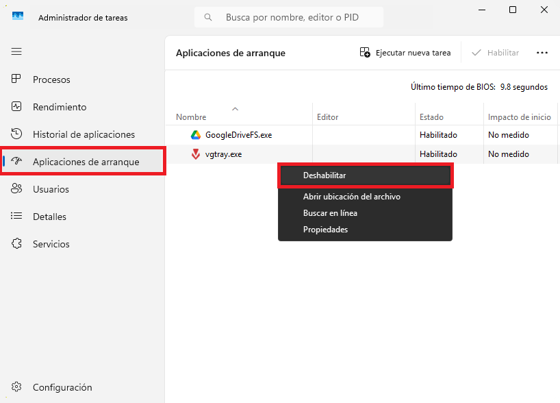

¿Qué significa optimizar Windows y para qué sirve?
Optimizar Windows significa hacer pequeños ajustes o "tweaks" en el sistema con el objetivo de
que funcione más rápido, fluido y eficiente. Se trata de configurar correctamente opciones que
vienen por defecto y que, con el tiempo, pueden afectar el rendimiento.
Si usamos la computadora a diario, es normal que Windows acumule programas innecesarios, procesos
en segundo plano y archivos que ya no se usan. Todo esto puede hacer que la computadora arranque
más lento
o responda peor.
En esta guía proporcionaremos algunas optimizaciones simples y seguras, pensadas para mejorar el
rendimiento general del sistema y aprovechar mejor los recursos del equipo, sin instalar
programas externos ni tocar configuraciones muy avanzadas.

Optimización #1: Reducción de efectos visuales
Para aumentar el rendimiento podemos reducir los efectos visuales que Windows trae activados por
defecto.
- Presionamos la combinación de teclas Win + R. Al hacerlo, se abrirá esta
ventana:

- En el campo de texto escribiremos SystemPropertiesPerformance y hacemos clic en
Aceptar. Se abrirá la siguiente ventana:

- Dejamos las opciones como se ve en la imagen. En caso de querer un mayor rendimiento,
seleccionamos "Ajustar para obtener el mejor rendimiento".
- Luego, presionamos la combinación de teclas Win + i y nos dirigimos a
Personalización, luego a Colores, y allí desactivamos los Efectos de
transparencia.

Realizado esos pasos, habremos desactivado varios efectos visuales de Windows que pueden
perjudicar el rendimiento, sobre todo en computadoras un poco antiguas. De todas maneras, ayuda
a cualquier computadora a disminuir ligeramente la latencia.
Optimización #2: Configuración de la memoria virtual
Windows, de manera predeterminada, administra la memoria virtual de forma automática. Esta
memoria es utilizada
como apoyo cuando la RAM no es suficiente, pero una mala configuración puede afectar el
rendimiento. Configurarla adecuadamente nos puede dar una mayor estabilidad y un mejor
funcionamiento del sistema.
Para realizar la configuración, seguí los siguientes pasos:
- Presionamos Win + R. Se abrirá la ventana Ejecutar.
- En el campo de texto escribiremos SystemPropertiesPerformance y hacemos clic en
Aceptar. Se abrirá la ventana de la optimización #1.
- Nos dirigimos a la pestaña Opciones avanzadas y, en la sección "Memoria virtual"
hacemos clic en
"Cambiar..."

Se abrirá una nueva ventana:
- Desmarcamos la opción "Administrar automáticamente el tamaño del archivo de
paginación para todas las unidades".
- Seleccionamos la unidad donde está instalado Windows (por defecto C:) elegimos Tamaño
personalizado y colocamos el valor correspondiente a nuestra memoria RAM tanto en
Tamaño inicial como en Tamaño máximo.
En Windows, 1 GB equivale a 1024 MB.
Por ejemplo, si la PC tiene 16 GB de RAM, el cálculo sería el siguiente:
1024 x 16 = 16384 MB.
Luego hacemos clic en Establecer y quedaría algo así:

- Finalmente, presionamos Aceptar en todas las ventanas para guardar los cambios.
Con estos seis pasos, habremos configurado la memoria virtual con un valor fijo, logrando que
Windows no ajuste dinámicamente su tamaño y evitando así las fluctuaciones en la memoria
administrada por el sistema.
Optimización #3: Desactivar aplicaciones de arranque
Hay aplicaciones que se ejecutan junto al arranque de Windows y eso puede ralentizar los tiempos
de carga al iniciar el sistema.
- Hacemos clic derecho en la barra de tareas y seleccionamos Administrador de tareas. Se
nos abrirá una ventana.
- Nos dirigmos a "Aplicaciones de arranque" y allí hacemos clic derecho en el programa que
deseamos desactivar al inicio de Windows y hacemos clic en "Deshabilitar".

Desactivar aplicaciones de arranque hará que nuestro Windows inicie de forma más ligera, rápida y
limpia.
¿Es recomendable optimizar Windows?
Sí, es recomendable, ya que permitirá que el sistema funcione de manera más fluida, rápida y
estable
con el paso del tiempo. Realizar estos pequeños ajustes, nos permite reducir algunos tiempos de
carga, mejorar la respuesta del sistema y aprovechar mejor los recursos del hardware, sobretodo
en computadoras antiguas o con componentes limitados.